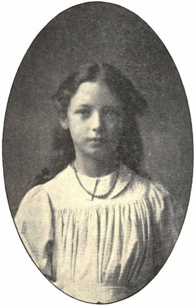
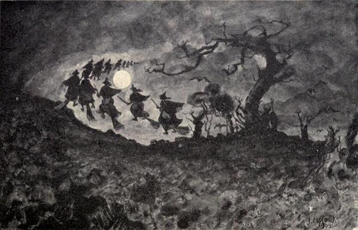
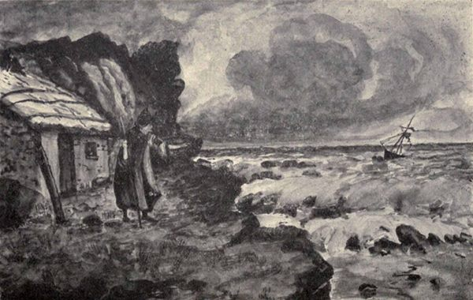
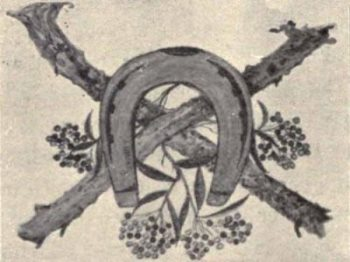
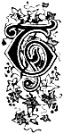

Witchcraft and Superstitious Record
Witchcraft and
Superstitious Record
IN THE
South-Western District of Scotland
| Witchcraft |
|
Witch Trials |
| Fairy Lore |
|
Brownie Lore |
| Wraiths |
|
Warnings |
| Death Customs |
|
Funeral Ceremony |
| Ghost Lore |
|
Haunted Houses |
BY
J. MAXWELL WOOD, M.B.
Author of “Smuggling in the Solway and
Around the Galloway Sea-board”
Editor of “The Gallovidian,” 1900-1911
Illustrated from Special Drawings by
John Copland, Esq., Dundrenna
Dumfries: J. Maxwell & Son
1911
“For she’s gathered witch dew in the Kells kirkyard,
In the mirk how of the moon,
And fed hersel’ wi’ th’ wild witch milk
With a red-hot burning spoon.”
—M‘Lehan.

To
Alison Jean Maxwell Wood
A “witch” of my most intimate acquaintance
PREFACE.
Throughout Dumfriesshire and Galloway remnants of old-world customs still linger, suggesting a remoter time, when superstitious practice and belief held all-important sway in the daily round and task of the people.
In gathering together the available material bearing upon such matters, more particularly in the direction of witchcraft, fairy-lore, death warnings, funeral ceremony and ghost story, the author trusts that by recording the results of his gleanings much as they have been received, and without at all attempting to subject them to higher analysis or criticism, a truer aspect and reflection of the influence of superstition upon the social life of those older days, may be all the more adequately presented.
112 George Street, Edinburgh,
August 9th, 1911.
CONTENTS.
ILLUSTRATIONS.
| |
Page. |
| The Witches’ Ride |
4 |
| “And Perish’d Mony a Bonny Boat” |
12 |
| The Carlin’s Cairn |
35 |
| A Witch-Brew and Incantation |
38 |
| “A Running Stream they dare na cross” |
69 |
| A Witch Trial |
85 |
| The Burning of the Nine Women on the Sands of Dumfries, April 13th, 1659 |
114 |
| Penance |
125 |
| “In Fairy Glade” |
152 |
| “Riddling in the Reek” |
167 |
| An Eerie Companion |
206 |
| “Deid Lichts” |
211 |
| Funeral Hospitality |
222 |
| A Galloway Funeral of Other Days |
238 |
| The Headless Piper of Patiesthorn |
266 |
| The Ghost of Buckland Glen |
271 |
| “To Tryst with Lag” |
280 |
| Ringcroft of Stocking |
324 |
| |
| Tail-pieces. |
| |
Page. |
| A Threefold Charm ’gainst Evil |
20 |
| Witch Stool and Brooms |
65 |
| Witch Cauldron, Ducking Stool, and Stake |
141 |
| To Kep Skaith |
197 |
| A Midnight Revel |
215 |
| Haunted |
243 |
Witchcraft and Superstitious Record
IN THE
South-western District of Scotland.
CHAPTER I.
Traditional Witchcraft Described.
“When out the hellish legion sallied.”
—Tam o’ Shanter.
 n the far-off days, when Superstition, in close association with the “evil sister” of Ignorance, walked abroad in the land, the south-western district of Scotland shared very largely in the beliefs and terrors embraced under the general descriptive term of witchcraft. Active interference in the routine of daily life on the part of the Prince of Darkness and his agencies was fully believed in. The midnight ride, the power of conversion into animal semblance and form, mystic rite and incantation, spells and cantrips, as well as the presence on earth of the Devil himself, who generally appeared in some alluring form—all had a firmly-established place in the superstitious and impressionable minds of the people who dwelt in the land of those darker days.
n the far-off days, when Superstition, in close association with the “evil sister” of Ignorance, walked abroad in the land, the south-western district of Scotland shared very largely in the beliefs and terrors embraced under the general descriptive term of witchcraft. Active interference in the routine of daily life on the part of the Prince of Darkness and his agencies was fully believed in. The midnight ride, the power of conversion into animal semblance and form, mystic rite and incantation, spells and cantrips, as well as the presence on earth of the Devil himself, who generally appeared in some alluring form—all had a firmly-established place in the superstitious and impressionable minds of the people who dwelt in the land of those darker days.
In approaching the whole matter for descriptive purposes, the traditional, or as it may perhaps be fittingly termed, the “ideal” form of witchcraft, falls naturally first to be considered, and here the existence of a secret society or unholy order of witches and warlocks meeting together at certain appointed times, figures as an outstanding feature, qualification to belong to which, confessed rare powers of affinity with the powers of evil and darkness. The more these witches and warlocks were feared in their ordinary guise as human mortals by the country-side or district to which they belonged, the higher the rank accorded to them in secret conclave, and the special notoriety of having been branded or “scored,” at the hands of an angry populace, with the sign of the cross on the forehead, carried with it special recognition of itself. Reputed gatherings or witch-festivals were celebrated periodically, the most important and outstanding taking place at Hallowmass, and such eerie places of meeting as the lonely ruins of Sweetheart Abbey and Caerlaverock Castle, were the appropriate scenes of their midnight rites and revels; but most of all in this south-western district was it to the rising slope of Locharbriggs Hill, not many miles from Dumfries, that the “hellish legion” repaired.
There is a remnant extant of an old song called the “Witches’ Gathering,” that with quaint and mystic indication tells of the preliminary signals and signs, announcing that a midnight re-union or “Hallowmass rade” as it was aptly termed, had been arranged and appointed:—
“When the gray howlet has three times hoo’d,
When the grimy cat has three times mewed,
When the tod has yowled three times i’ the wode,
At the red moon cowering ahin the cl’ud;
When the stars ha’e cruppen’ deep i’ the drift,
Lest cantrips had pyked them out o’ the lift,
Up horsies a’ but mair adowe,
Ryde, ryde for Locher-briggs-knowe!”
On such a night the very elements themselves seemed in sympathy. The wind rose, gust following gust, in angry and ever-increasing intensity, till it hurled itself in angry blasts that levelled hay-rick and grain-stack, and tore the thatched roof from homestead and cot, where the frightened dwellers huddled and crept together in terror. Over and with higher note than the blast itself, high-pitched eldritch laughter, fleeting and mocking, skirled and shrieked through the air. Then a lull, with a stillness more terrifying than even the wild force of the angry blast, only to be almost immediately broken with a crash of ear-splitting thunder, and the flash and the glare of forked and jagged flame, lighting up the unhallowed pathway of the “witches’ ride.”

“The Witches’ Ride.”
Sketch by J. Copland, Dundrennan.
The journey itself, or rather the mode of progression in passing to the “witch gathering,” was itself steeped in “diabolerie” of varying degree. The simple broomstick served the more ordinary witch for a steed. Another vehicle was the chariot of “rag-wort” or ragweed, “harnessed to the wind;” for sisters of higher rank, broomsticks specially shod with the bones of murdered men, became high mettled and most spirited steeds; but the possession of a bridle, the leather of which was made from the skin of an unbaptised infant, and the iron bits forged at the “smithy” of the Evil One himself, gave to its possessor the power of most potent spell. Only let a witch shake this instrument of Satan over any living thing, man or beast, and at once it was transformed into an active witch steed in the form generally of a gray horse, with the full knowledge and resentment that a spell had been wrought, to compass this ignoble use. This was familiarly known and described as being “ridden post by a witch.”
No better picture was ever drawn of the wild witch diabolerie and abandon than in “Tam o’ Shanter,” but it may be claimed for Galloway that in the possession of the powerful poem of “Maggie o’ the Moss,” Ayrshire is followed very closely, as the following quotation bearing upon this particular point brings out:—
“But Maggie had that nicht to gang
Through regions dreary, dark, and lang,
To hold her orgies.
······
Then cross his haunches striding o’er,
She gave him the command to soar:
At first poor Simon, sweir to yield,
Held hard and fast the frosty field;
His body now earth’s surface spurn’d,
He seem’d like gravitation turned;
His heels went bickering in the air,
He held till he could haud nae mair,
Till first wi’ ae han’, syne the tither,
He lost his haud o’t a’ thegither;
And mounted up in gallant style,
Right perpendicular for a mile.
······
For brawly ken’d she how to ride,
And stick richt close to Simon’s hide;
For aft had Maggie on a cat
Across the German Ocean sat;
And wi’ aul’ Nick and a’ his kennel,
Had often crossed the British Channel,
And mony a nicht wi’ them had gone
To Brussels, Paris, or Toulon;
And mony a stormy Hallowe’en
Had Maggie danced on Calais Green!”
Like a swarm of bees in full flight they passed, all astride of something, be it rag-wort, broomstick, kail-runt, hare, cat, or domestic fowl, or even as indicated riding post on a human steed.
Assembled at the Dumfriesshire or Galloway “Brocken,” tribute to Satan, who presided in person, had to be paid for the privilege of exercising their unholy licence over their several districts and neighbourhoods. This took the form of unchristened “Kain Bairns,” the witches’ own by preference, but failing this, the stolen offspring of women of their own particular neighbourhood.
The rite of baptismal entry, which all novitiates had to undergo, was also a regular part of the weird proceedings of this witches’ Sabbath.
A magic circle was drawn round the top of the meeting mound, across which none but the initiated and those about to be initiated, dare pass. In the centre of this circle a fire emitting a thick, dense, sulphurous smoke sprang up, round which the assembled company of witches and warlocks danced with joined hands and wild abandon. Into the charmed circle the converts, naked and terror-stricken, were brought and dragged to the fire, which now sent forth even thicker clouds as if in a measure to screen the secrecy of the rites even from those participating, and scream after scream arose as their naked bodies were stamped with the hellish sign-manual of the order. A powerful soothing ointment was, however, immediately poured on the raw wounds, giving instant relief and almost effacement to the ordinary eye, the well-concealed cicatrix becoming the “witch-mark.” The grim nature of the ordeal now gave place to proceedings more in keeping with a festival, and dancing of the “better the worse” order and general hilarity and high revelry followed, the Prince of Darkness joining in the dance, giving expert exhibitions with favoured partners.
Next in importance to Satan himself at these “Walpurgis” night festivals at Locharbriggs tryst, was the celebrated witch “Gyre Carline,” who possessed a wand of great creative and destructive power. It is told how in the days when Lochar Moss was an open arm of the Solway Firth, an extra large tide swept up and washed away several of the witch steeds from the Locharbrigg hill. This so enraged the “Gyre Carline” that over the unruly waters she waved her magic wand, and what was “once a moss and then a sea” became “again a moss and aye will be.” At other meetings of less consequence the more important carlines of different districts met together, when schemes of persecution and revenge were evolved, and where philtres and charms were brewed and concocted for distribution amongst their inferior sisters whose office it was to give them effect. A concoction of virulent power was in the form of a bannock or cake, better known as the “witch cake,” whose uncannie preparation and potency has been so quaintly described in verse by Allan Cunningham:—
The Witch Cake.
“I saw yestreen, I saw yestreen,
Little wis ye what I saw yestreen,
The black cat pyked out the gray ane’s een
At the hip o’ the hemlock knowe yestreen.
Wi’ her tail i’ her teeth, she whomel’d roun’,
Wi’ her tail i’ her teeth, she whomel’d roun’,
Till a braw star drapt frae the lift aboon,
An’ she keppit it e’er it wan to the grun.
She hynt them a’ in her mou’ an’ chowed,
She hynt them a’ in her mou’ an’ chowed,
She drabbled them owre wi’ a black tade’s blude,
An’ baked a bannock an’ ca’d it gude!
She haurned it weel wi’ ae blink o’ the moon,
She haurned it weel wi’ ae blink o’ the moon,
An withre-shines thrice she whorled it roun’,
There’s some sall skirl ere ye be done.
Some lass maun gae wi’ a kilted sark,
Some priest maun preach in a thackless kirk,
Thread maun be spun for a dead man’s sark,
A’ maun be done e’er the sang o’ the lark.
Tell me what ye saw yestreen,
Tell me what ye saw yestreen,
There’s yin may gaur thee sich an’ green,
For telling what ye saw yestreen.”
At such minor meetings also, effigies were moulded in clay of those who had offended, which pierced with pins conveyed serious bodily injuries and disorder in their victims corresponding to the pin punctures. Two of these carlines dispensing the “black art” in the respective parishes of Caerlaverock and Newabbey were in the habit of meeting with each other for such purpose, but the holy men of Sweetheart Abbey overcame their wicked designs by earnest prayers, so much so that their meetings on the solid earth were rendered futile, and thus thwarted, their intercourse had to take place on the water.
Of this the following tale from “Cromek,” as reputed to be told by an eye-witness, is descriptive:—
“I gaed out ae fine summer night to haud my halve at the Pow fit. It was twal’ o’clock an’ a’ was lowne; the moon had just gotten up—ye mought a gathered preens. I heard something firsle like silk—I glowered roun’ an’ lake! what saw I but a bonnie boat, wi’ a nob o’ gowd, and sails like new-coined siller. It was only but a wee bittie frae me. I mought amaist touch’t it. ‘Gude speed ye gif ye gang for guid,’ quoth I, ‘for I dreed our auld carline was casting some o’ her pranks.’ Another cunning boat cam’ off frae Caerla’rick to meet it. Thae twa bade a stricken hour thegither sidie for sidie. ‘Haith,’ quoth I, ‘the deil’s grit wi’ some!’ sae I crap down amang some lang cowes till Luckie cam’ back. The boat played bowte again the bank, an out lowpes Kimmer, wi’ a pyked naig’s head i’ her han’. ‘Lord be about us!’ quo’ I, for she cam’ straught for me. She howked up a green turf, covered her bane, an’ gaed her wa’s. When I thought her hame, up I got and pou’d up the bane and haed it. I was fleyed to gae back for twa or three nights, lest the deil’s minnie should wyte me for her uncannie boat and lair me ’mang the sludge, or maybe do waur. I gaed back howsever, and on that night o’ the moon wha comes to me but Kimmer. ‘Rabbin,’ quo’ she, ‘fand ye are auld bane amang the cowes?’ ‘’Deed no, it may be gowd for me,’ quo’ I. ‘Weel, weel,’ quo’ she, ‘I’ll byde and help ye hame wi’ your fish.’ God’s be me help, nought grippit I but tades and paddocks! ‘Satan, thy nieve’s here,’ quo’ I. ‘Ken ye’ (quo’ I) ‘o’ yon new cheese our wyfe took but frae the chessel yestreen? I’m gaun to send’t t’ ye i’ the morning, ye’re a gude neebor to me: an’ hear’st thou me? There’s a bit auld bane whomeled aneath thae cowes; I kent nae it was thine.’ Kimmer drew’t out. ‘Ay, ay, it’s my auld bane; weel speed ye.’ I’ the very first pow I got sic a louthe o’ fish that I carried ’till me back cracked again.”(1)
A celebrated witch connected with Wigtownshire was Maggie Osborne.

“And perish’d mony a bonny boat.”—Tam o’ Shanter.
Sketch by J. Copland, Dundrennan.
“On the wild moorland between the marches of Carrick and the valley of the Luce tracks are pointed out, on which the heather will not grow, as ‘Maggie’s gate to Gallowa’’; the sod having been so deeply burned by her tread, or that of her weird companion. Among the misdemeanours imputed to her, in aggravation of the charge for which she was cruelly condemned, was that of having impiously partaken of the communion at the Moor Kirk of Luce. She accepted the bread at the minister’s hands, but a sharp-eyed office-bearer (long after) swore that he had detected her spitting out the wafer at the church-door, which he clearly saw swallowed by the devil, who had waited for her outside in the shape of a toad. Again it was asserted that when passing from Barr to Glenluce by the ‘Nick o’ the Balloch’ she encountered a funeral procession, and to pass unseen she changed herself into a beetle; but before she could creep out of the way, a shepherd in the party unwittingly set his foot upon her, and would have crushed her outright had not a rut partly protected her. Much frightened and hurt she vowed vengeance; but the moor-man being a pious man, for long her arts were of no avail against him. One night however, detained late by a storm, he sat down hurriedly to supper, having forgotten to say grace. Her incantations then had power. A wreath of snow was collected and hurled from the hill above on the devoted cabin, and the shepherd, his wife, and family of ten were smothered in the avalanche.”(2)
In Glenluce a story is handed down which brings out that it was not necessarily the dweller in the humble cot on whom the mantle of witchcraft fell, but that the high-bred dames of the “Hall” did also at times dabble in the practice.
“A labouring man’s wife, a sensible, decent woman, having been detained late from home, was returning about the witching hour; and at a spot known as the ‘Clay Slap’ she met face to face a troop of females, as to whose leader, being cloven-footed, she could not be mistaken. Her consternation was the greater, as one by one she recognised them all, and among them the ladies of the manor. They stopped her, and in her terror she appealed to one of them by name. Enraged at being known, the party declared that she must die. She pleaded for mercy, and they agreed to spare her life on her taking an awful oath that she would never reveal the names of any as long as they lived.
“Fear prevented her from breaking her pledge, but as one by one the dames paid the debt of nature, she would mysteriously exclaim ‘There’s anither of the gang gone!’ She outlived them all, and then divulged the secret, adding that on that dreadful night, after getting to her bed, she lay entranced in an agony as if she had been roasting between two fires.”(3)
The name of Michael Scott of Balwearie (Fife), scholar and alchemist, who lived in the thirteenth century, is traditionally associated with the Abbey of Glenluce. Regarded by the peasantry as a warlock, he was supposed to be here buried with his magic books, and there is a story extant to the effect that a man in the district who daringly disinterred his skeleton, found it in a sitting position confronting him, and that the sight drove him stark mad.
Whilst in the neighbourhood of Glenluce, “Michael the Warlock” is credited with having exercised strong discipline over the witches of the district. One task he assigned them to keep them from more doubtful work, was to spin ropes from sea-sand, and it is yet said that some of the rope fragments may be seen to this day near Ringdoo Point, near the mouth of the Luce, when laid bare by wind and tide. Another equally profitless and endless task set for the same purpose of keeping them from unsanctioned, mischievous deeds, was the threshing of barley chaff.
There is a quaint reference in MacTaggart’s Gallovidian Encyclopædia to the “Library of Michael Scott.” He says, “One of these (vaults) at the Auld Abbey of Glenluce contains the famous library of Michael Scott, the Warlock. Here are thousands of old witch songs and incantations, books of the ‘Black Art,’ and ‘Necromancy,’ ‘Philosophy of the Devil,’ ‘Satan’s Almanacks,’ ‘The Fire Spangs of Faustus,’ ‘The Soothsayers’ Creed,’ ‘The Witch Chronicle,’ and the ‘Black Clud’s Wyme laid open,’ with many more valuable volumes.”
It may be noted in passing that the Abbey of Holm-Cultram, in Cumberland, has also been associated as the burial-place of the Wizard Michael; but it is with Melrose Abbey, as depicted by Sir Walter Scott in the “Lay of the Last Minstrel,” that the most cherished associations linger, even if only in the romance of poetry:—
“With beating heart to the task he went;
His sinewy frame o’er the grave-stone bent;
With bar of iron heaved amain,
Till the toil-drops fell from his brows like rain;
It was by dint of passing strength,
That he moved the massy stone at length.”
·······
“Before their eyes the Wizard lay,
As if he had not been dead a day.”
The religious house of Tongland may be said to have some slight connection here, for in Dunbar’s poem of “The Dream of the Abbot of Tungland” (the “frenziet” Friar) there is reference to a witch—“Janet the widow, on ane besome rydand.”
“Bess o’ Borgue” and “Glencairn Kate” were two notorious south-country witches. They are included in the descriptive witch-poem of “Maggie o’ the Moss,” already referred to.
About the middle of the eighteenth century there was a famous witch that lived at Hannayston, in the Kells, who was credited with wonderful powers, and many stories of her exploits are still current. Some say her name was Nicholas Grier, others that it was Girzie M‘Clegg, but it matters little which now. Some of Lucky’s favourite pastimes were, drowning anyone she had a spite at by sinking a caup in the yill-boat in her kitchen; sucking cows in the shape of a hare; frightening people at night by appearing to them like a little naked boy; walking in the resemblance of a cat on its hind legs; conversing with travellers on the road; and sending young people into declines.(4)
The old Church of Dalry has a legend of witch-festival surrounding it, which gives it a distinction something akin to the better-known tradition of Alloway Kirk. The following version is taken from Harper’s Rambles:—
“Adam Forester, proprietor of Knocksheen, had been detained one evening until near midnight in the public-house at Dalry. On the way home he had to pass the church, and being perhaps like the famous Tam o’ Shanter, through indulging in inspiring bold John Barleycorn, ready to defy all dangers in the shape of goblin and spirit, he very soon had his mettle tested. On reaching the church the windows ‘seemed in a bleeze,’ and from within loud bursts of mirth and revelry reached the ears of the astonished laird. Nothing daunted however, he dismounted, and securing his horse to a tree near the church-yard wall, he peered in at the window, and to his astonishment, amongst those engaged in the ‘dance o’ witches’ were several old women of his acquaintance, amongst whom was the landlady of the public-house where he had spent the greater part of the evening, and which he had just left. Horrified with such desecration of the sacred edifice, and unable longer to restrain his displeasure, Forester shouted, ‘Ho! ho! Lucky, ye’ll no deny this the morn!’ knocking at the same instant against the window frame with his whip. In a moment the lights were extinguished, and the witches with loud yells rushed out of the church after him; but the laird, having gained his horse, went off at a furious gallop for the ford on the Ken, his pursuers following hard upon him, their frantic and hideous shouts striking terror to his heart. As they could not cross the running stream, they flew to the Brig o’ Ken, six miles distant, where they crossed and overtook Adam on Waterside Hill, tearing all the hair out of the horse’s tail, and Lucky getting her black hand on the horse’s hip. She left its impression there for life. The laird, finding he could proceed no further, dismounted and was only saved from being torn to pieces by describing a circle in God’s name round himself and horse. This charm proved effectual. The fury of the mysterious band was arrested, and at daybreak he rode home to his residence.”
The story is still current in the Glenkens, and what is supposed to be the circle drawn by the laird is pointed out on Waterside Hill.
In concluding the account of “traditional witchcraft,” there yet falls to be mentioned one outstanding form in which beautiful and seductive female shapes were assumed to tempt through the flesh, the destruction of soul and body. There is no better reference to this than in the local traditional tale of the “Laird of Logan” of Allan Cunningham, where the struggle between the powers of darkness and those of good contend, not without a certain dignity of purpose, for the mastery. The following is the dramatic denouement:—
“He took a sword from the wall, and described a circle, in the centre of which he stood himself. Over the line drawn with an instrument on which the name of God is written, nought unholy can pass. ‘Master, stand beside me, and bear ye the sword.’ He next filled a cup with water, and said, ‘Emblem of purity, and resembling God, for He is pure, as nought unholy can pass over thee whilst thou runnest in thy native fountain, neither can ought unholy abide thy touch, thus consecrated—as thou art the emblem of God, go and do His good work. Amen.’ So saying he turned suddenly round and dashed the cupful of water in the face and bosom of the young lady—fell on his knees and bowed his head in prayer. She uttered scream upon scream; her complexion changed; her long locks twined and writhed like serpents; the flesh seemed to shrivel on her body; and the light shone in her eyes which the Master trembled to look upon. She tried to pass the circle towards him but could not. A burning flame seemed to encompass and consume her; and as she dissolved away he heard a voice saying, ‘But for that subtle priest, thou hadst supped with me in hell.’”

CHAPTER II.
Witch Narrative.
“The best kye in the byre gaed yell;
Some died, some couldna raise themsel’;
In short, ilk’ beast the farmer had
Died—sicken’d—rotted—or gaed mad!”
—Maggie o’ the Moss.
he witchcraft however, which had a special abiding-place in rural districts, was most usually associated with the presence in their midst of someone to whom it was supposed the devil had bequeathed the doubtful possession of the “evil eye,” a possession which at all times was deemed a certain means of bringing about supernatural ill. Other suspected workers of subtle cantrips whom the finger of suspicion was ready to point to were old creatures, not uncommonly poor and eccentric, perhaps even deformed or with some peculiarity, but generally genuinely blameless, or in some instances foolishly seeking notoriety in the pretended possession of witch-power.
The spells and cantrips alleged to be cast by these agencies were usually such as brought harmful effect upon human being or farm stock, such supposed incidence of supernatural interference being accepted without question. A natural consequence followed in misdirected measures of protection and retaliation. The whole atmosphere of domestic life became charged with suspicious attitude towards one another, and when illness overtook either human being or four-footed beast, or some such minor happening as a heated stack, or a cow failing to yield milk, took place, the presence of the “Black Art” was proclaimed in their midst, and too often was accidental circumstance followed by unjust cruelty and persecution, sanctioned and practised, as we shall see later, by the powers of the State and Church.
Many stories of such form of witchcraft have been handed down and still form a not inconsiderable part of the floating tradition pertaining to the south-western district of Dumfries and Galloway.
The following traditions, not hitherto recorded, are from western Galloway, and may be regarded as consequent to the influence of the “evil eye”:—
“There was an old woman who went about Kirkmaiden begging, or what old people call ‘thigging,’ and one day in the course of her wanderings she came to a place called ‘The Clash’ and asked for butter, which she seemed to particularly want. As luck would have it, the farm folks had only newly put the milk into the churn, and had no butter in the house until it was churned. In passing, it may be noticed that the churn was always put out of sight when this old woman appeared, in case she might ‘witch’ it. As they had no butter they offered her both meal and a piece of meat, but butter she would have, so she went away, muttering ‘that maybe she would fen’ without it,’ and more talk to the same purpose. The farmer met her on the way from the house and heard her mutterings. On arriving at his house he asked what they had done to the old woman to put her in such a temper, and was told the circumstances. He had two young horses in a field beside the house, and going out of the house into the field he found one of them rolling on the ground seemingly in great pain. Of course he jumped to the conclusion that this was some of the witch’s cantrips, and after trying to get it to rise, bethought himself of going after her and bringing her back to get her to lift the spell. Following the old woman, who was very lame, he soon overtook her and tried to coax her to return to see if she could tell him what was wrong. She demurred at first, but he pressed her, and at last she said, that seeing he was so anxious she would go back. When they arrived the animal was still suffering great pain, and she proceeded to walk round it some few times always muttering to herself, and at last cried, ‘Whish! get up,’ striking the horse; ‘there’s naething wrang wi’ ye.’ The horse at once got up and commenced feeding, apparently nothing the matter with it.”(5)
“At the Dribblings, on what is now the farm of Low Curghie (Kirkmaiden), lived a cottar who was the owner of two cows. One morning on going to the byre one of the cows was on the ground and unable to rise. The people did not know what to do, but as luck would have it, the same old woman that cured the horse at The Clash happened to come in, and was informed of the trouble, and was asked if she could do anything, and was promised a piece of butter for her trouble. She went and looked at the cow, and said someone with an ‘ill e’e had overlooked it,’ i.e., witched it, and proceeded to walk round it two or three times, talking to herself, and then gave it a tap with her stick and told the animal to get up, she was all right now. The cow immediately got to her feet and commenced feeding.”(6)
“At a farm-house in the vicinity of Logan an old woman, a reputed witch, was in the habit of receiving the greater part of her sustenance from the farmer and his wife. The farmer began to get tired of this sorning, and one day took his courage in both hands and turned the witch at the gate. The old woman of course was sorely displeased, and told him that he would soon have plenty of ‘beef,’ and in the course of a day or two many of his cattle had taken the muir-ill. Next time the old woman wanted to go to the house she was not hindered. She got her usual supply, and thereafter not another beast took the disease.”(7)
It is related of the same old woman that once she wanted some favour off the factor on Logan, and one day as he rode past her dwelling she hailed him. Not caring to be troubled with her he made the excuse that his horse would not stand as it was young and very restive; but she said she would soon make it stand, and by some spell so terrified the animal that it stood trembling while the sweat was running over its hooves.
“The farm of the Grennan, in the Rhinns, had been taken or was reported to have been taken over the sitting tenant’s head; and the new tenants, when they took possession, were regarded with general disfavour. The farm good-wife was a bustling, energetic woman, with some pretensions as to good looks, and was always extremely busy. One day an old-fashioned diminutive woman knocked at the door and asked for a wee pickle meal. The good-wife answered in an off-hand manner that she had no meal for her, and told her to ‘tak’ the gait.’ The old woman looked at her steadily for a short time, and then said, ‘My good woman, you are strong and healthy just now, but strong and weel as ye are, that can sune be altered, and big as ye are in yer way, the hearse is no’ bigget that will tak’ ye to the kirkyaird, and a dung-cairt will ha’e to ser’ ye.’ In less than a year the gude-wife died, and the hearse broke down at the road-end leading to the farm, and could come no further, and as a matter of fact a farm-cart had to be employed to carry the corpse to the churchyard.”(8)
The influence of the “evil eye” has been somewhat crudely recorded in verse under the heading of “Galloway Traditions: The Blink o’ an Ill E’e,” in the Galloway Register for 1832, an almost forgotten periodical published at Stranraer. It is here set forth, as it minutely expresses and brings out, though in homely fashion, how belief in witchcraft and its powers was intimately bound up with the every-day conditions of the life of the times:—